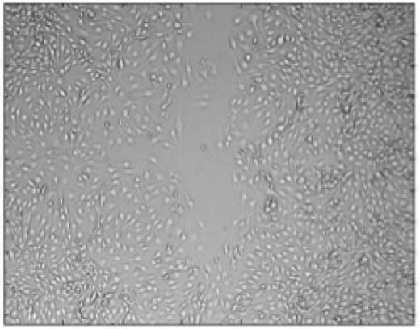
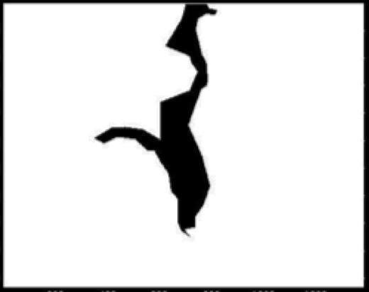
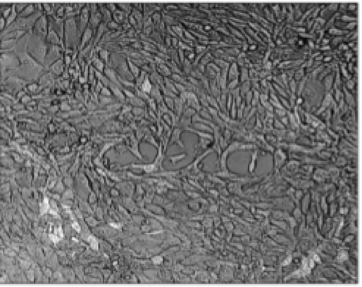
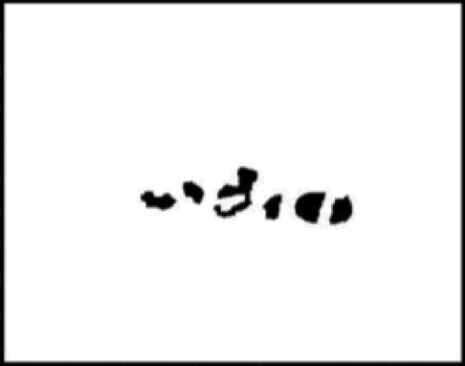

Broad Bioimage Benchmark Collection
Annotated biological image sets for testing and validation
Collective cell migration
Accession number BBBC019 · Version 2
Example images
-
DIC image
-
Ground truth F
-
DIC image
-
Ground truth F
Biological application
The wound-healing assay is considered the gold standard for studying cell motility and migration. The assay is performed by time-lapse imaging (usually by phase contrast, or differential interference contrast (DIC) microscopy) of the closure of a wound formed by scratching a confluent cell culture. The rate of change in the wound's area is recorded and can be compared with other cells and treatments. Marking the region of interest for each image is the basic task required. The high variability in imaging conditions and cellular appearance requires robust algorithms that can deal with this diversity automatically and accurately—and preferably without the need for parameter tuning. The general problem of segmenting cell clusters in bright-field images is also important for other applications, such as quantifying scatter, thus emphasizing the importance of segmenting images of non-confluent cells.
Images
171 images were partitioned to the eight data sets detailed below.
- TScratch
- 24 images available at the TScratch (software for wound healing segmentation) website (without details of the source), were acquired using a Zeiss Axiovert 200 M microscope equipped with a Zeiss AxioCam MRm camera with maximum contrast (Carl Zeiss AG, Feldbach, Switzerland).
- Melanoma
- 20 images of cell populations of brain metastatic melanoma during a would healing experiment were acquired in the I. Witz lab using an inverted microscope (Eclipse TE 2000-S; Nikon, Enfield Enfield, CT, USA) fitted with a digital camera (DXM1200F; Nikon).
- Init
- 28 DIC images (pixel size 0.625×0.625 µm) of confluent DA3 cells were acquired using LSM-410 microscope (Zeiss, Germany) in non-confocal mode from 2 single-well experiments in Ilan Tsarfay's laboratory at Tel Aviv University.
- SN15
- 54 DIC images (pixel size 1.24×1.24 µm) of confluent DA3 cells were acquired using LSM-510 microscope (Zeiss, Germany) in non-confocal mode, from 27 different wells in a wound healing multi-well experiment performed in Ilan Tsarfay's laboratory at Tel Aviv University.
- Scatter
- 6 DIC images of MDCK cells were acquired using LSM-410 microscope (Zeiss, Germany) in non-confocal mode from a 96-well plate scatter experiment performed in Ilan Tsarfay's laboratory at Tel Aviv University.
- Microfluidics
- 13 DIC images (pixel size 0.5 x 0.5 µm) of MDCK cells grown in a Cellasic Onix M04S microfluidic plate, acquired using Leica STED microscope in non-confocal mode from a scatter assay with HGF/SF gradient experiment performed in Ilan Tsarfay's laboratory at Tel Aviv University.
- HEK293
- 12 DIC images (pixel size 2.5 x 2.5 µm) of confluent HEK293T cells were acquired using LSM-410 microscope (Zeiss, Germany) in non-confocal mode from a multi-well wound healing experiment in Ilan Tsarfay's laboratory at Tel Aviv University.
- MDCK
- 14 DIC images (pixel size either 0.88 x 0.88 or 1.24 x 1.24 µm) of confluent MDCK/YFP-membrane cells in a wound healing 24-well plate experiment performed in Ilan Tsarfay's laboratory at Tel Aviv University. Images were acquired with an LSM-510 microscope (Zeiss, Germany) in non-confocal mode.
Ground truth F
To collect ground truth, each image was manually segmented to enable comparisons between accuracies of different segmentations. There ground truth is stored as one binary bitmap image in PNG format per input image, named identically except for the ".png" at the end of the filename. White (1) denotes foreground.
Published results using this image set
The accuracy reported in the chart below is defined as follows:
- Mean Precision of images in the dataset
- (Mean Recall of images in the dataset)
| Algorithm | Image set | Citation for results | |||||||
|---|---|---|---|---|---|---|---|---|---|
| Init (N=28) |
SN15 (N=54) |
Melanoma (N=20) |
TScratch (N=24) |
Scatter (N=6) |
Microfluidics (N=13) |
HEK293 (N=12) |
MDCK (N=14) |
||
| TScratch [Gebäck et al., Biotechniques, 2009] | 0.94 (0.99) |
0.94 (0.98) |
0.89 (0.89) |
0.90 (0.98) |
0.38 (0.86) |
0.35 (0.79) |
0.84 (0.97) |
0.90 (0.95) |
[Zaritsky, et al. BMC Bioinformatics 2013] |
| MultiCellSeg [Zaritsky et al. PLoS ONE, 2011] | 0.98 (0.98) |
0.97 (0.97) |
0.81 (0.94) |
0.93 (0.94) |
0.45 (0.79) |
0.23 (0.98) |
0.95 (0.95) |
0.97 (0.96) |
[Zaritsky, et al. BMC Bioinformatics 2013] |
| Topman [Topman et al. Med Eng Phys, 2011] | 0.96 (1.00) |
0.92 (0.99) |
0.91 (0.94) |
0.95 (0.67) |
0.43 (0.98) |
0.47 (0.99) |
0.74 (1.00) |
0.81 (0.99) |
[Zaritsky, et al. BMC Bioinformatics 2013] |
F-measure results:
- Mean F-measure of images in the dataset
- (Median F-measure of images in the dataset)
- [Mean F-Measure after threshold adjusted on training set]
| Algorithm | Image set | Citation for results | |||||||
|---|---|---|---|---|---|---|---|---|---|
| Init (N=28) |
SN15 (N=54) |
Melanoma (N=20) |
TScratch (N=24) |
Scatter (N=6) |
Microfluidics (N=13) |
HEK293 (N=12) |
MDCK (N=14) |
||
| TScratch [Gebäck et al., Biotechniques, 2009] | 0.96 (0.96) |
0.96 (0.97) |
0.88 (0.90) |
0.94 (0.93) |
0.47 (0.47) |
0.42 (0.41) |
0.90 (0.91) |
0.92 (0.93) |
[Zaritsky, et al. BMC Bioinformatics 2013] |
| MultiCellSeg [Zaritsky et al. PLoS ONE, 2011] | 0.98 (0.98) |
0.97 (0.98) |
0.85 (0.91) |
0.93 (0.95) |
0.55 (0.56) |
0.35 (0.45) |
0.95 (0.95) |
0.96 (0.98) |
[Zaritsky, et al. BMC Bioinformatics 2013] |
| Topman [Topman et al. Med Eng Phys, 2011] | 0.98 (0.98) [0.97] |
0.95 (0.97) [0.96] |
0.93 (0.93) [0.93] |
0.78 (0.76) [0.84] |
0.58 (0.60) [0.52] |
0.63 (0.63) [0.61] |
0.85 (0.87) [0.84] |
0.89 (0.93) [0.93] |
[Zaritsky, et al. BMC Bioinformatics 2013] |
Information in the above charts was from:
- Zaritsky, et al.: Benchmark for multi-cellular segmentation of bright field microscopy images. BMC Bioinformatics 2013 14:319. [link]
Supplementary data and information to Zaritsky, BMC Bioinformatics 2013 may be found here:
Supplement (tar.gz) (167,252,832 bytes)Acknowledgements
Melanoma images were acquired by Sivan Izraeli from Isaac P. Witz's laboratory. TScratch images were taken from the TScratch website. The rest of the images were acquired by Sari Natan, Doron Kaplan, and Yaniv Goikhman from Ilan Tsarfay's laboratory at Tel Aviv University. Doron Kaplan labeled regions of interest in "MDCK" images. Assaf Zaritsky labeled the regions of interest in all other images and ran the algorithms.
Version history
- 2013-10-28 Version 2: Added four new datasets: Scatter, Microfluidics, HEK293, and MDCK
Recommended citation
"We used image set BBBC019v2 from the Broad Bioimage Benchmark Collection [Ljosa et al., Nature Methods, 2012]."
Copyright
 The BBBC019v2 image set
are licensed under a Creative Commons Attribution 3.0 Unported License by Petros Komoutsakos (TScratch), Isaac P. Witz, Ilan Tsarfay, and Assaf Zaritsky.
The BBBC019v2 image set
are licensed under a Creative Commons Attribution 3.0 Unported License by Petros Komoutsakos (TScratch), Isaac P. Witz, Ilan Tsarfay, and Assaf Zaritsky.